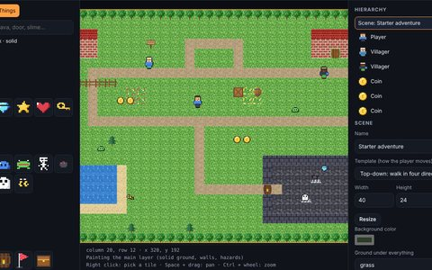
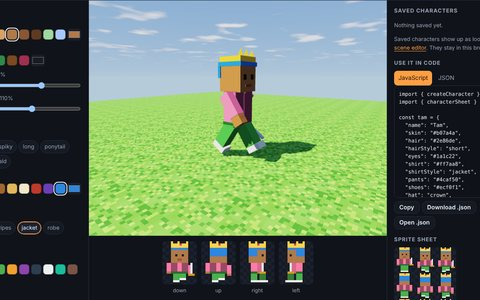

Scene editor
Paint levels from 95 tiles in two layers, drop in players, enemies, pickups, doors and villagers, change their components in the inspector, and press Play.
2deditor
Make
Editors that run in your browser, with nothing to install. They save in this browser as you work, and everything they make is a small JSON file the engine loads, so you can also write it by hand.
Design a character, save it, and it appears as a look in the scene editor and in the templates.

Paint levels from 95 tiles in two layers, drop in players, enemies, pickups, doors and villagers, change their components in the inspector, and press Play.

Hair, clothes, hats, faces, capes, wings and held items in any color. See it in 3D and as 2D sprites at once; export JSON or code.
Smaller tools from Kindling 1, still handy.